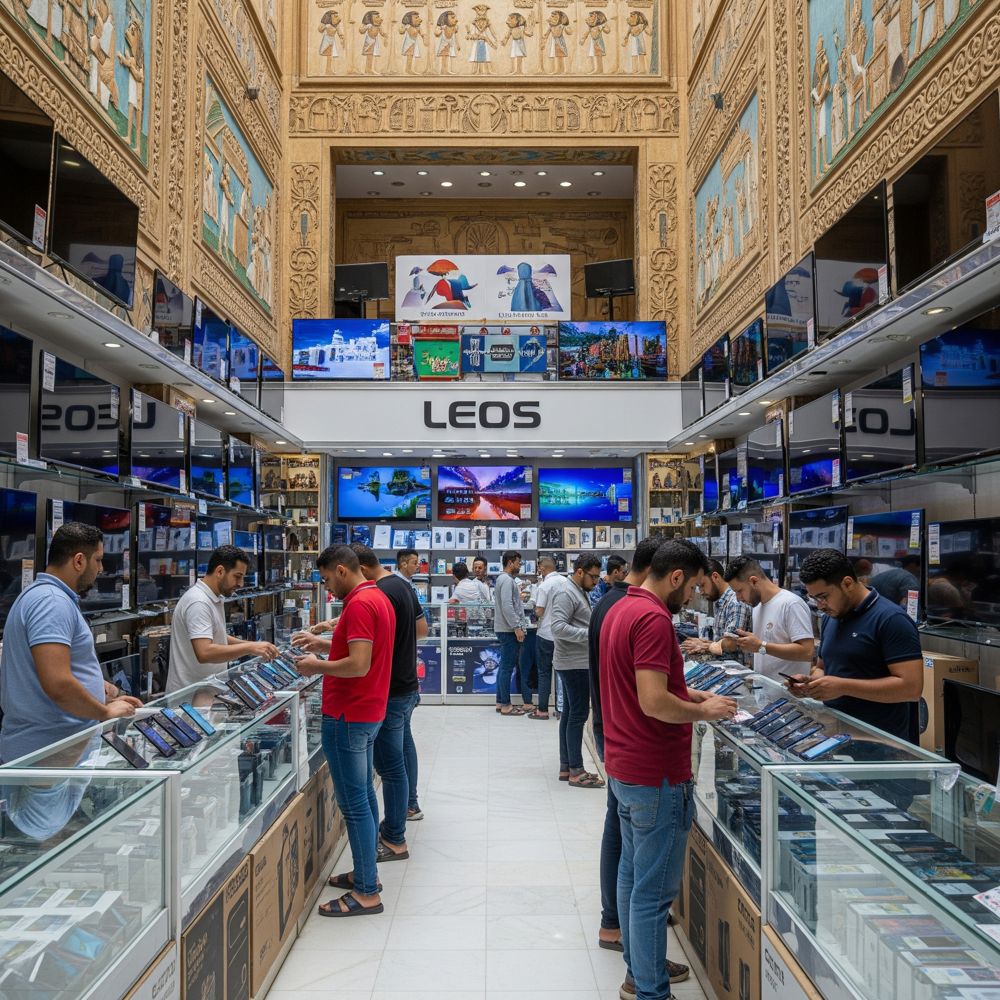

من نحن
مرحبًا بكم في متجر الساهر للإلكترونيات، المتخصص في بيع وصيانة الأجهزة الإلكترونية والمنزلية منذ عام 2002.
نحن نقدم أفضل أنواع الريسيفرات بجميع فئاتها (العادية، المتوسطة، عالية الجودة، والسمارت) بالإضافة إلى خدمات التركيب والصيانة بأسعار تنافسية وجودة عالية.
يقع متجرنا في شارع المطرواي، أمام مستشفى النور المحمدي، منطقة المطرية – القاهرة – مصر، ونقدم خدمة العملاء يوميًا من الساعة 12 ظهراً حتى 11 مساءً.
معرض الصور



العودة للصفحة الرئيسية